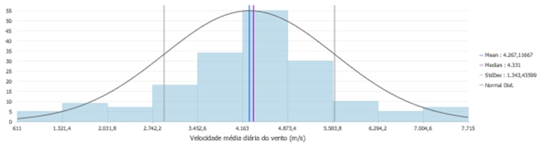
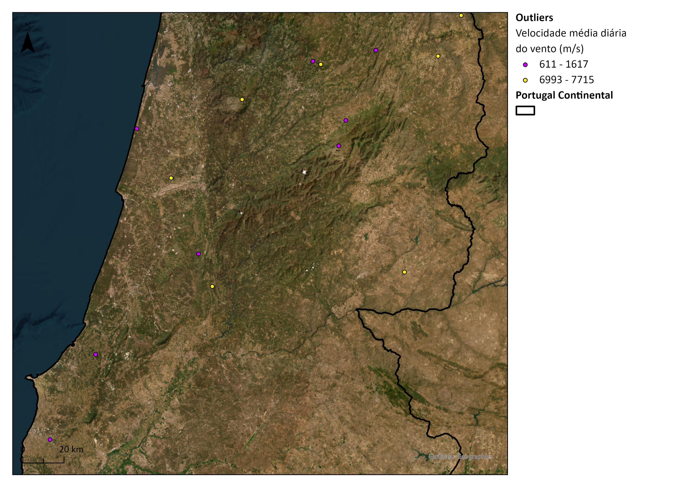
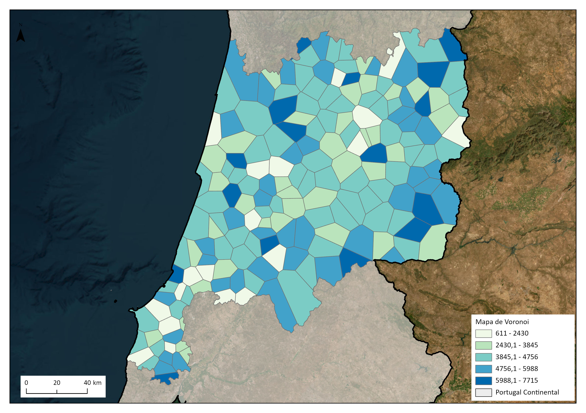
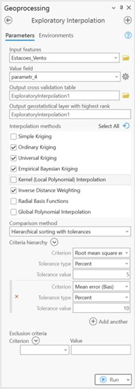

Interpolated Surface of Daily Average Wind Speed in the Central Region of Portugal
Introduction
This work, developed within the scope of the Spatial Statistics course, aims to produce an interpolated surface of the daily average wind speed in the central region of Portugal, using a DTM as an explanatory variable. The objective is to address the following questions through the results produced:
- What is the geographical location of the extreme values of wind speed?
- Are there areas that stand out for their high or low wind speeds?
- Is there a global identifiable trend in wind speed values?
- Was global spatial autocorrelation identified in wind speed data? Does this mean that wind speed in a certain area is influenced by values in neighboring areas?
- Analyze the spatial correlation between wind speed (dependent variable) and the DTM (independent variable).
Methodology
- Data Collection and Cleaning:
Data on daily average wind speed were collected from 180 meteorological stations in the Central region of Continental Portugal for the period 2001-2023 through the National Information System on Water Resources (SNIRH-APA). Additionally, data on the characteristics of each station were also collected. These data were obtained in two .csv files, which were then imported into ArcGIS Pro for spatial joining and cleaning.
- Exploratory Spatial Data Analysis (ESDA):
An exploratory analysis of the spatial data was conducted to gain preliminary insights. This included developing:
- A histogram to visualize wind speed distribution and identify patterns or anomalies.
- Analysis of the geographic distribution of meteorological stations to provide insights into spatial coverage and potential sampling areas.
- Identification of outliers using visualization of the geographic distribution and the quartile method.
- A Voronoi map to visualize areas influenced by each meteorological station.
- Spatial Autocorrelation analysis using Global Moran's I to determine significant spatial patterns.
Figure 3: Histogram of average daily wind speed Figure 4: Identification of outliers Figure 5: Voronoi map of average daily wind speed  - Exploratory Interpolation:
Various interpolation methods were evaluated using the Exploratory Interpolation tool in ArcGIS Pro to determine the most suitable method. The Empirical Bayesian Kriging (EBK) Regression was chosen for its ability to handle complex spatial data and integrate additional explanatory variables, such as the DTM.
Figure 6: Exploratory Interpolation in ArcGIS Pro  - EBK Regression:
EBK Regression was selected due to its adaptive statistical approach and ability to create multiple semivariograms. This method was chosen for its accuracy and flexibility, especially when dealing with data that exhibit non-uniform or complex spatial variability. The K-Bessel Semivariogram Type was chosen for its flexibility and higher accuracy. Various tests were conducted to fine-tune the model, adjusting the number of neighbors and sectors to optimize prediction accuracy.
Results
The results of the EBK Regression model show the interpolated surface of daily average wind speed in the Central region of Portugal. The model effectively captures the spatial variability and provides a reliable estimation of wind speeds, which is valuable for wind energy project planning.
Conclusion
The detailed analysis of wind speed data in the central region of Portugal using EBK Regression methodology revealed the complexity and variability of wind conditions. No trend was identified in data distribution or outliers. The spatial autocorrelation of the data is insignificant, and the values of nugget, range, and sill reflect the high complexity of wind patterns in the central region of Portugal.